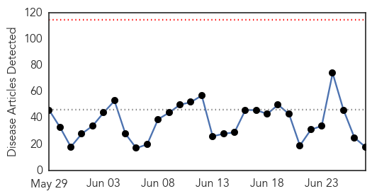
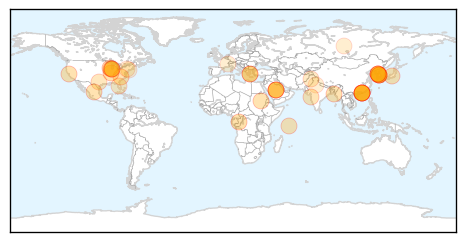
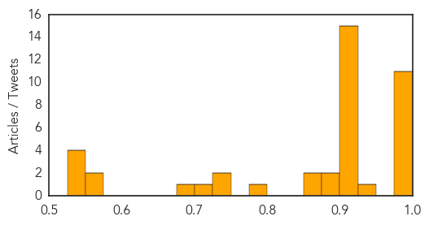

Ebola
30-Day Web Trend
0 alerts, 0 warnings

30-Day Twitter Trend
0 alerts, 0 warnings

Article Locations

Article Confidences

Top Articles:
- 1.000
- Sierra Leone suffers Ebola setback
- 1.000
- Sierra Leone records new cases of Ebola
- 1.000
- Eyewitness News: Ebola returns to Freetown after 3-week gap
- 0.999
- Guinea Quarantines Coastal Towns to End Ebola
- 0.999
- After Ebola, How Will We Prevent the Next Pandemic?
- 0.999
- Anniversary of First Recorded Ebola Outbreak
- 0.989
- Researchers frustrated by failing to making ‘game-changing’ Ebola test
- 0.968
- BREAKING NEWS: The Mabela -PCMH Ebola Case! Doctors and Nurses Quarantined: The true story, Get it right
- 0.967
- Feature Article 2015-06-27
- 0.941
- Marginal Changes, Massive Effects: Improving Foreign Aid
- 0.881
- Welcome to the Expotimes News
- 0.856
- National Neglected Tropical Diseases Programme ends Annual Conference with Debriefing
- 0.847
- Ebola – Researchers are frustrated by the delay in rolling out the ‘game changing’ test
- 0.806
- Do statins offer hope vs. Ebola?
- 0.779
- U.S Ambassador Visits NATCOM
- 0.583
- Our rickety hospitals and a health system in shambles
- 0.565
- Is Bondo for white women now? Caitlyn Jenner’s “initiation” into western womanhood
- 0.531
- A Microscopic Look @ The 2016 Presidential Elections of The USA
Top Tweets:
- 0.932
- Anniversary of First Recorded Ebola Outbreak - New Historian http://t.co/h2WeJTKjnr ebola EVD
- 0.901
- High-res image of Ebola virus reveals how it evades the immune system - Medical News Today http://t.co/bg5uMb3ej3 ebola EVD
- 0.865
- Ebola Could Be Back This Summer - Daily Signal http://t.co/jFDcTMluRx ebola EVD
- 0.782
- Guinea Quarantines Coastal Towns to End Ebola - Voice of America http://t.co/lowOM4cxdI ebola EVD
- 0.594
- RT: “@HarvardResearch A new test can accurately diagnose the Ebola virus within minutes at the point of care http://t.co/86p3J…
- 0.593
- Weekly case incidence of Ebola has stalled at between 20-27 cases since the end of May. Intense EbolaResponse efforts are still underway.
- 0.525
- We continue to see community ownership as key to ending the Ebola outbreak. EbolaResponse http://t.co/ExSwfJczQP
Unknown
30-Day Web Trend
15 alerts, 4 warnings

30-Day Twitter Trend
7 alerts, 1 warnings
Article Locations
Article Confidences
Top Articles:
- 0.999
- Mers may have spread to new Seoul hospital
- 0.999
- South Korea Reports One New MERS Case
- 0.998
- Seoul hospital watched amid fear of Mers spread, while three suspected cases in Hong Kong come back negative
- 0.998
- South Korea fears Mers may have spread to new hospital, Government & Economy
- 0.998
- (4th LD) S. Korea reports one new case of MERS, bringing total to 182
- 0.997
- S Korea fears MERS may have spread
- 0.997
- (3rd LD) S. Korea reports one new case of MERS, bringing total to 182
- 0.996
- (3rd LD) S. Korea reports one new case of MERS, bringing total to 182
- 0.992
- South Korea fears MERS may have spread to new hospital
- 0.985
- Conflicting reports surface about congo fever among Afghans
- 0.981
- South Korea's MERS deaths reach 23 — World News
- 0.939
- Indonesia at High Risk of MERS
- 0.921
- Expert says MERS contained, but sees need for vigilance
- 0.917
- Chicago Tribune
- 0.917
- Chicago Tribune
- 0.917
- Chicago Tribune
- 0.917
- Chicago Tribune
- 0.917
- Chicago Tribune
- 0.917
- Chicago Tribune
- 0.917
- Chicago Tribune
- 0.917
- Chicago Tribune
- 0.917
- Chicago Tribune
- 0.917
- Chicago Tribune
- 0.917
- Chicago Tribune
- 0.917
- Chicago Tribune
- 0.917
- Chicago Tribune
- 0.917
- Chicago Tribune
- 0.893
- Korea MERS update: 182 cases, MERS legislation, China case released from hospital
- 0.876
- Nation Home
- 0.874
- Update?on?latest?MERS?situation?in?Korea
- 0.864
- Everything you want to know about Shingles that killed Sanjeevani actor
- 0.782
- 163 Texas Border Students Tested for TB
- 0.739
- Why You Should Come Out to Your Doctor
- 0.726
- Health Officials In Florida Attempt To Allay Public Fear Over Flesh-Eating Bacteria : LIFE : Tech Times
- 0.722
- Private hospital inspected for MERS screening measures
- 0.684
- Pakistan among top countries with TB
- 0.568
- The Caledonian-Record
- 0.562
- Many Americans with HIV don't know they're infected
- 0.549
- Bill Gates hopeful of AIDS vaccine in 10 years
- 0.546
- Bill Gates hopeful of AIDS vaccine in 10 years
- 0.543
- Analyses Of Local Ticks Show Two Emerging Pathogens
- 0.531
- Delhi health minister orders hospitals to ensure punctuality
Top Tweets:
-
No tweets found for Jun 27, 2015